Высокочастотный генератор с цифровым синтезом частоты (диапазон частот 40 ... 41 МГц, амплитуда выходного напряжения до 20 В)
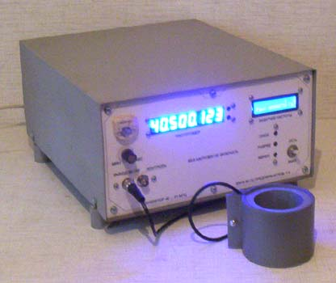
1. Назначение высокочастотного генератора
Генератор разработан для проведения технологических опытов, в частности, обработки материалов, помещаемых в катушки индуктивности, которые генерируют электромагнитное поле с достаточно точно заданной и высокостабильной частотой. Для предотвращения помех теле- и радиоприему все узлы генератора собраны в металлических корпусах, выполняющих роль электромагнитных экранов, а опыты проводятся в экранированном боксе.
2. Конструкция высокочастотного генератора
Блок-схема высокочастотного генератора показана на рис. 2.1. Для упрощения сопряжения высокочастотных узлов генератора используется принцип одинаковости входных и выходных сопротивлений, которые подстройкой согласующих цепей устанавливаются равными 50 Ом [4].
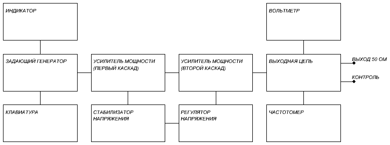
Рис. 2.1. Блок-схема высокочастотного генератора.
Генератор состоит из задающего генератора на основе микросхемы цифрового синтезатора частоты, двухкаскадного усилителя мощности, источника питания со стабилизатором напряжения, регулятора напряжения для питания оконечного каскада усилителя мощности, выходной цепи, включающей в себя вольтметр и емкостной делитель для подключения приборов внешнего контроля. Для контроля частоты выходного сигнала используется частотомер. Для контроля частоты, устанавливаемой посредством кнопочной клавиатуры, и режима работы служит двухстрочный жидкокристаллический дисплей.
Задающий генератор построен из трех модулей: цифровой синтезатор частоты, микроконтроллер и выходной усилитель [3]. В качестве цифрового синтезатора частоты используется модуль HC-SR08 на основе микросхемы AD9851 [1]. Микроконтроллером служит модуль Arduino Pro mini (микроконтроллер на микросхеме ATmega328) с предварительно загруженным отладчиком, позволяющим использовать программы, написанные на языке C в среде программирования Arduino [2]. Выходной усилитель задающего генератора - широкополосный усилитель мощности. Для установки и контроля режима работы устройства используются жидкокристаллический дисплей (две строки по 16 символов в каждой) и трехкнопочная клавиатура, подключаемые к выходным линиям микроконтроллера. Рабочая частота задающего генератора, задаваемая программно и устанавливаемая с помощью кнопочной клавиатуры в диапазоне 40 ... 41 МГц, отражается на дисплее, амплитуда выходного напряжения примерно 4 В на частоте 40 МГц. Электрическая принципиальная схема задающего генератора приведена на рис. 2.2.
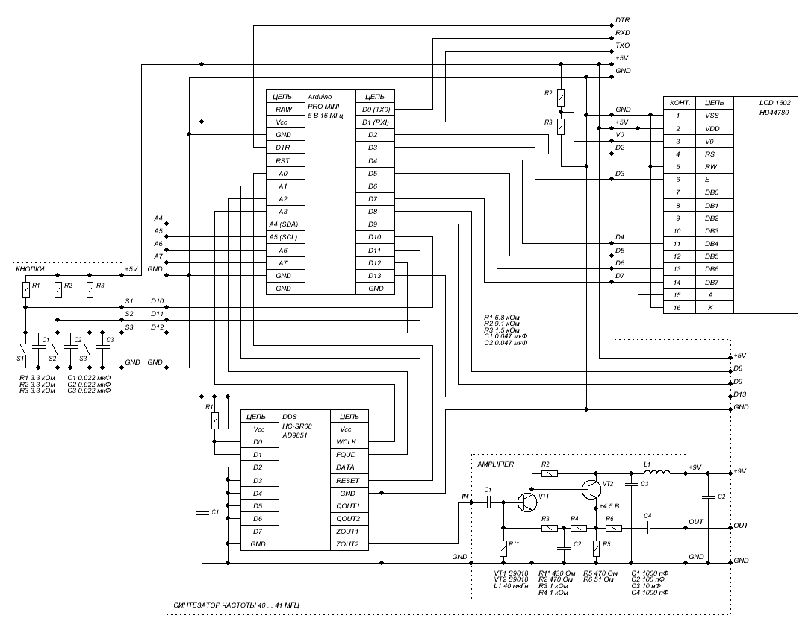
Рис. 2.2. Схема электрическая принципиальная задающего генератора с цифровым синтезатором частоты с выходным усилителем.
Вариант программы микроконтроллера в среде Arduino:
|
/* #include
<Bounce2.h> byte sym1[8] =
// стрелка вниз byte sym2[8] = // буква
Г byte sym3[8] = // буква
ц byte sym4[8] = // буква
н #define pressed_long 2000 //
долговременное нажатие = 2 секунды Bounce bouncer1 = Bounce();
//создаем экземпляры класса Bounce unsigned long pressed_moment; //
момент нажатия кнопки long fr_1 = 40500000 ; // Main
frequency #define W_CLK A3 // A3 -
connect to AD9851 W_CLK #define B_MIN 10
// D10 - connect to Button Minimize #define LED_PIN 13 // D13 - LED #define pulseHigh(pin)
{digitalWrite(pin, HIGH); digitalWrite(pin, LOW); } void tfr_byte(byte data) void sendFrequency(double frequency)
{ void setup(){ pinMode(LED_PIN, OUTPUT); bouncer1.attach(B_MIN) ;
// Button A5 pulseHigh(RESET); start() ; } void loop(){ void start() { void KBD_But() { void F_Change() { |
Модули задающего генератора смонтированы на печатной кросс-плате, эскиз которой показан на рис. 2.3. Кросс-плата со смонтированными на ней модулями помещена в корпус из оцинкованного железа, выполняющего роль экрана. На рис. 2.4 изображен эскиз печатной платы клавиатуры, служащей для управления задающим генератором.
Рис. 2.3. Печатная кросс-плата задающего генератора. Размеры печатной платы 80 х 65 мм2.
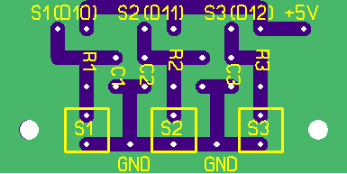
Рис. 2.4. Печатная плата с кнопками управления. Размер печатной платы 60 х 30 мм2.
Усилитель мощности состоит из двух каскадов. Электрическая принципиальная схема первого каскада усилителя мощности представлена на рис. 2.5, а второго (оконечного) - на рис. 2.6. Оба каскада усилителя мощности собраны по сходным однотактным схемам на транзисторах КТ603 [6] и КТ907А [5], соответственно, со смещением рабочей точки усилительного транзистора с помощью диодных цепей (VD1VD2) и согласующими LC-цепями на входе и на выходе. Подстройка согласующих цепей осуществляется подбором соответствующих конденсаторов при включенной на выходе высокочастотного генератора нагрузке (катушка индуктивности).
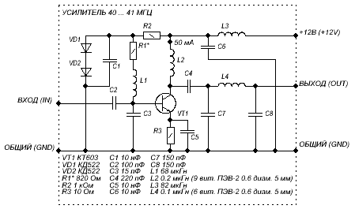
Рис. 2.5. Электрическая принципиальная схема первого каскада усилителя мощности.
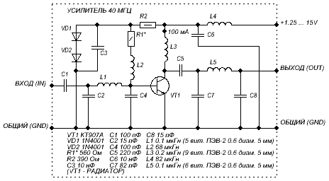
Рис. 2.6. Электрическая принципиальная схема второго (оконечного) каскада усилителя мощности.
На рис. 2.7, 2.8 показаны эскизы печатных плат обоих каскадов усилителя мощности. Печатные платы сделаны из двухстороннего фольгированного текстолита, одна из сторон которого выполняет роль общего провода. Монтаж деталей выполнен поверхностным методом. Печатные платы помещены в корпуса из оцинкованного железа, выполняющие роль экранов. Корпус второго каскада усилителя мощности служит теплоотводом для усилительного транзистора VT1 (КТ907А).
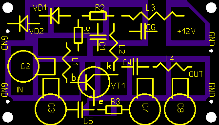
Рис. 2.7. Печатная плата первого каскада усилителя мощности. Размер печатной платы 70 х 40 мм2.
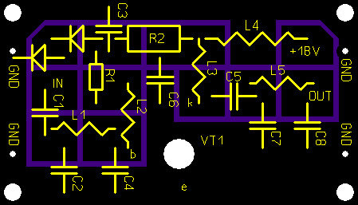
Рис. 2.8. Печатная плата второго (оконечного) каскада усилителя мощности. Размер печатной платы 70 х 40 мм2.
Для подключения внешней нагрузки, вольтметра для контроля амплитуды выходного напряжения, частотомера для контроля выходной частоты и приборов внешнего контроля используется выходная цепь, схема которой показана на рис. 2.9, а эскиз печатной платы - на рис. 2.10.
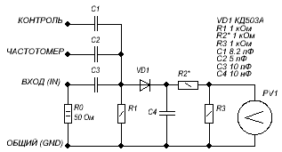
Рис. 2.9. Схема электрическая принципиальная выходной цепи высокочастотного генератора с вольтметром для контроля амплитуды выходного сигнала.
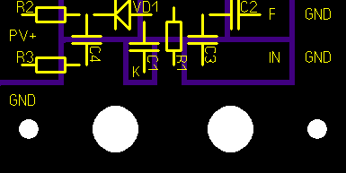
Рис. 2.10. Печатная плата выходной цепи высокочастотного генератора. Размер печатной платы 60 х 30 мм2.
Питание высокочастотного генератора осуществляется от сети переменного тока напряжением 220 В частотой 50 Гц. Источник питания генератора собран по схеме понижающий сетевой трансформатор - мостовой выпрямитель - стабилизатор напряжения (рис. 2.11, понижающий трансформатор не показан). Переменное напряжение со вторичной обмотки понижающего трансформатора подается на мостовой диодный выпрямитель VD1-VD4, выпрямленное напряжение сглаживается с помощью конденсаторного фильтра C1C2 и поступает на трехкаскадный стабилизатор напряжения DA1DA2DA3, который обеспечивает узлы генератора стабилизированными питающими напряжениями +5 В, +9 В, +12 В. Нестабилизированное напряжение +16 В подается на регулятор напряжения (рис. 2.12), который обеспечивает питание оконечного каскада усилителя мощности и возможность ее регулировки.
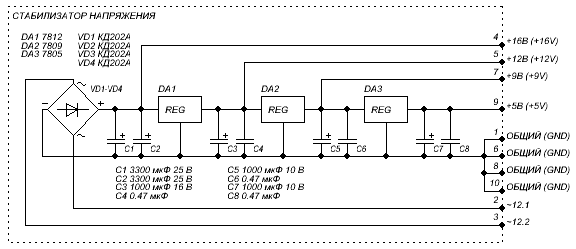
Рис. 2.11. Схема электрическая принципиальная стабилизатора напряжения.
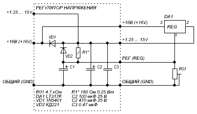
Рис. 2.12. Схема электрическая принципиальная регулятора напряжения.
Эскизы печатных плат стабилизатора напряжения и регулятора напряжения показаны на рис. 2.13, 2.14.
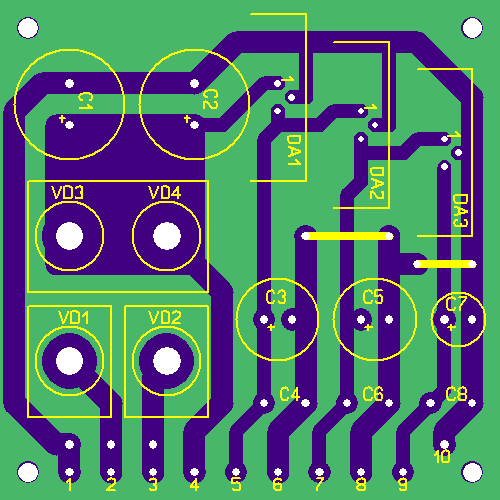
Рис. 2.13. Печатная плата стабилизатора напряжения. Размер печатной платы 90 х 90 мм2.
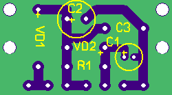
Рис. 2.14. Печатная плата регулятора напряжения. Размер печатной платы 45 х 25 мм2.
Высокочастотный генератор собран в корпусе размером 300 х 180 х 360 мм3 (без учета органов управления и подключения). Масса прибора не более 8 кг. Внешний и внутренний вид генератора показан на рис. 2.15 - 2.17. На передней панели (рис. 2.15) установлены органы управления (сетевой выключатель, клавиатура для установки рабочей частоты, регулятор выходной мощности), контроля (вольтметр, частотомер и дисплей задающего генератора) и подключения (разъемы для подключения нагрузки и приборов внешнего контроля). На задней панели (рис. 2.16) смонтированы сетевой кабель, сетевой предохранитель и клемма заземления.
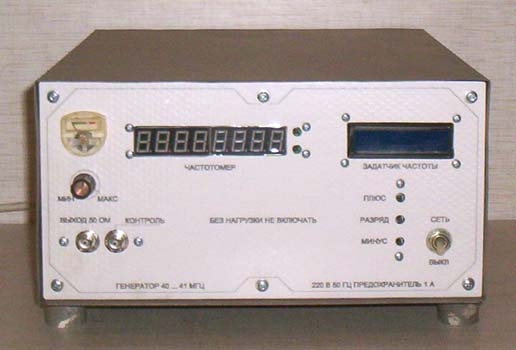
Рис. 2.15. Высокочастотный генератор 40 ... 41 МГц: вид спереди.
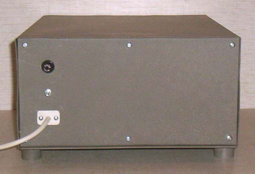
Рис. 2.16. Высокочастотный генератор 40 ... 41 МГц: вид сзади.
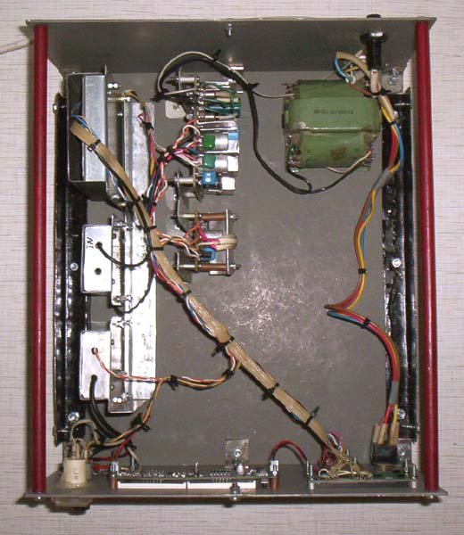
Рис. 2.17. Высокочастотный генератор 40 ... 41 МГц: вид изнутри сверху.
3. Рабочие катушки
Для работы с генератором рассчитаны и изготовлены катушки трех типоразмеров рабочей зоны: диаметром 30 мм высотой 50 мм (расчетная индуктивность 4.7 мкГн, частота собственного резонанса 40.7 МГц), диаметром 60 мм высотой 50 мм (расчетная индуктивность 2.85 мкГн, частота собственного резонанса 40.7 МГц), диаметром 120 мм высотой 50 мм (расчетная индуктивность 1.8 мкГн, частота собственного резонанса 40.6 МГц). Внешний вид катушек показан на рис. 3.1. Подключение катушек к генератору осуществляется посредством коаксиального кабеля с разъемом, имеющими волновое сопротивление 50 Ом.
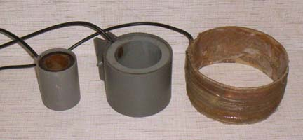
Рис. 3.1. Рабочие катушки.
4. Технические характеристики высокочастотного генератора
4.1. Диапазон рабочих частот 40 ... 41 МГц.
4.2. Точность установки рабочей частоты +1 Гц.
4.3. Стабильность рабочей частоты после прогрева в течение 10 минут не хуже +5
Гц.
4.4. К выходу генератора может подключаться нагрузка, имеющая произвольный
характер, например, активный, активно-индуктивный, индуктивный или
индуктивно-емкостной.
4.5. Амплитуда выходного напряжения на активной нагрузке 50 Ом до 15 В.
4.6. Амплитуда выходного напряжения на индуктивной нагрузке до 20 В.
4.7. Питание генератора осуществляется от сети переменного тока напряжением 220
В частотой 50 Гц, потребляемая мощность не превышает 25 В
∙ А при минимальной выходной мощности и
120 В
∙ А при максимальной.
4.8. Габариты генератора 300 (ширина) х 180 (высота) х 360 (глубина) мм3
(без учета органов управления и подключения).
4.9. Масса генератора не более 8 кг.
Ссылки:
27.09.2019
Альтернативные источники
энергии
Компьютеры и
Интернет
Магнитные поля
Механотронные системы
Перспективные
разработки
Электроника и технология